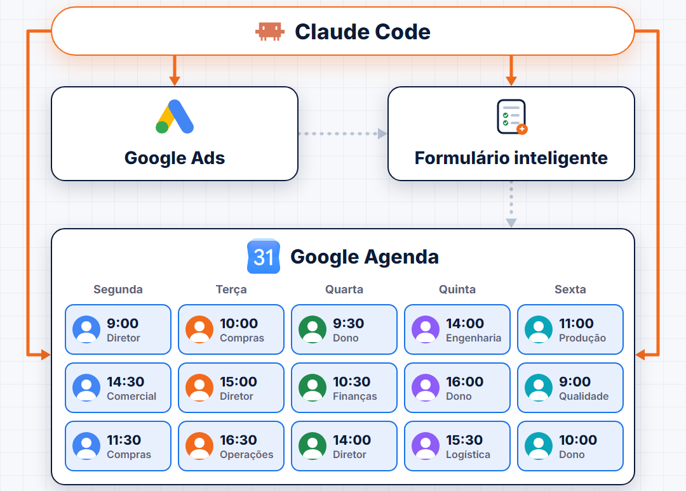
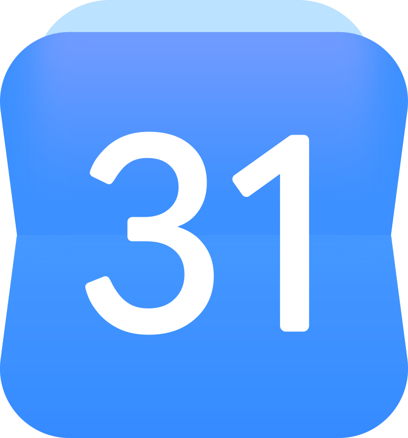
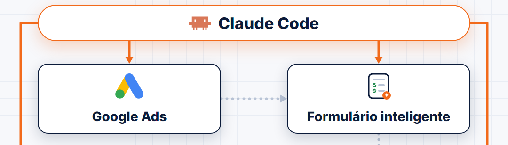
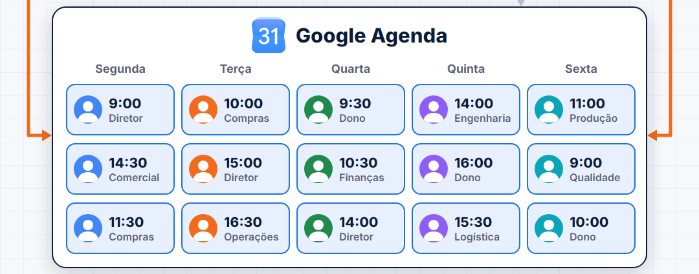

O caminho completo, em uma imagem

 Anúncio no Google
Anúncio no Google
Reunião agendadaO Google fica sabendoComo usar em 3 passos
Leia os 8 passos
Em 10 minutos você entende o caminho do anúncio até a venda e como o Google Ads aprende com ela.
Copie os comandos
Cada passo traz o comando pronto para o Claude ou para o Claude Code. Troque só o que está entre colchetes.
Teste com poucos leads
Comece com verba baixa, responda o formulário você mesmo e só aumente o investimento depois de ver os primeiros leads qualificados.
Lead qualificado toda semana vira faturamento todo mês
Sem agenda cheia, a venda do mês seguinte depende da sorte. Com leads qualificados chegando toda semana, dá para fazer uma conta simples:
| Cenário ilustrativo (valores de exemplo) | Resultado |
|---|---|
| Leads qualificados por semana | 10 |
| Desses, quantos viram cliente | 2 (20%) |
| Valor do produto vendido a cada cliente | R$ 2.000 |
| Faturamento por semana | R$ 4.000 |
| Faturamento em 4 semanas | R$ 16.000 |
Valores de exemplo, para você trocar pelos seus. Este material não promete que você terá esses números: eles mostram como a conta funciona.
O ponto da conta: neste exemplo, cada semana sem esses leads são R$ 4.000 que não entram. A calculadora do passo 8 faz essa conta com os seus números.
Oito passos, da pesquisa de mercado à venda avisada ao Google
Defina o cliente ideal da sua indústria
 Claude Code
Claude CodeAntes de qualquer anúncio, escreva em poucas linhas quem compra de você. Essa ficha alimenta todos os comandos seguintes.
| Item | O que escrever |
|---|---|
| Produto | [O QUE A SUA INDÚSTRIA VENDE, EM UMA FRASE] |
| Valor médio de um pedido | [R$ ...] (use o valor real; no exemplo deste material são R$ 2.000) |
| Quem compra | [SETOR, TAMANHO DA EMPRESA, CARGO DE QUEM DECIDE] |
| Onde você entrega | [REGIÕES QUE VOCÊ ATENDE] |
| Pedido mínimo | [QUANTIDADE OU VALOR MÍNIMO PARA VALER A PENA] |
| Quem você não quer atender | [EX.: PESSOA FÍSICA, PEDIDO ABAIXO DO MÍNIMO, FORA DA REGIÃO] |
Se você não souber algum item, escreva "não sei" e deixe o Claude sugerir hipóteses no passo 2. Depois confirme com o seu time comercial.
Peça ao Claude para pesquisar o mercado
O Claude é um assistente de inteligência artificial da Anthropic. Ele pesquisa em fontes públicas e entrega um relatório: quem compra, quem decide, as dores, o que as pessoas digitam no Google e o que os concorrentes prometem.
Você é um pesquisador de mercado B2B. Vou te passar a minha indústria e o produto que quero vender. Pesquise em fontes públicas e confiáveis e monte um relatório com: 1. Os 5 tipos de empresa que mais compram esse produto (setor, tamanho e região). 2. Em cada tipo, quem decide a compra e quem influencia (cargos). 3. As 3 maiores dores e os 3 maiores medos de quem compra. 4. As palavras que essas pessoas digitam no Google ao procurar esse produto. Separe em três grupos: quem já quer comprar, quem está pesquisando e quem só está curioso. 5. O que os concorrentes prometem nos sites e nos anúncios (cite o nome e o endereço). 6. O que costuma travar a compra. Minha indústria: [O QUE FAZ] Produto: [PRODUTO] Valor médio de um pedido: [R$ ...] Onde entrego: [REGIÕES] Pedido mínimo: [MÍNIMO] Regras: cite a fonte (nome e endereço) de cada informação. Se não achar fonte, escreva "não encontrei" e não invente. Separe o que é fato, com fonte, do que é hipótese sua. Não use número de mercado sem fonte e ano. Responda em português simples, sem sigla.
Confira antes de usar: abra 3 das fontes citadas. A pesquisa dá uma base, mas quem conhece o seu cliente é você e o seu time comercial. Corrija o relatório com o que eles ouvem nas ligações.
Monte a campanha no Google Ads com o relatório

Com o relatório pronto, o Claude monta a estrutura da campanha: um grupo de anúncios por tipo de empresa, as palavras que você quer, as que devem ser bloqueadas e os textos dos anúncios. O Claude não entra na sua conta: você copia o resultado para o Google Ads (ou importa por planilha, se preferir).
Com o relatório acima, monte a estrutura de uma campanha de pesquisa no Google Ads para a minha indústria. Entregue uma tabela com, para cada grupo de anúncios (um por tipo de empresa): - as palavras-chave de quem quer comprar ou pedir orçamento, em frase e exatas; - as palavras que devem ser bloqueadas (por exemplo: emprego, curso, grátis, usado, conserto, uso doméstico); - 3 títulos (até 30 caracteres cada) e 2 descrições (até 90 caracteres cada); - a página de destino: o meu formulário inteligente. Regras: nenhuma promessa de resultado, nenhum número, cliente ou depoimento inventado. Linguagem de quem fala com um diretor de indústria, em português simples. No fim, liste o que depende de uma decisão minha: orçamento diário, regiões e horários dos anúncios.
Antes de publicar, revise cada texto: tudo o que o anúncio diz precisa ser verdade e estar na página. Comece com orçamento baixo e poucos grupos.
Escreva as perguntas do formulário inteligente
O formulário faz o trabalho de triagem: quem não é cliente ideal é descartado com uma resposta educada, e só o lead qualificado segue. As perguntas são de escolha, sem texto livre. Seis delas dão nota e a última serve para você aprender.
| Pergunta | Opções e nota |
|---|---|
| 1. Qual é o seu cargo? | Dono ou sócio (2) · Diretor (2) · Gerente (1) · Comprador ou analista (1) · Outro (0) |
| 2. Quem decide a compra? | Eu decido (2) · Eu e mais alguém (1) · Outra pessoa (0) |
| 3. Para quando você precisa do produto? | Este mês (2) · Em 1 a 3 meses (1) · Mais de 3 meses (0) · Só estou pesquisando (0) |
| 4. Qual o tamanho do pedido que você precisa? | Acima do mínimo (2) · Perto do mínimo (1) · Abaixo do mínimo (0) |
| 5. Como você compra isso hoje? | Já compro e quero trocar de fornecedor (2) · Já compro e estou comparando (1) · Nunca comprei (1) · Só estou pesquisando (0) |
| 6. Onde fica a sua empresa? | [REGIÕES QUE VOCÊ ATENDE] (2) · Fora da região (0) |
| 7. Qual é o seu maior problema hoje? | [4 DORES DO RELATÓRIO DO PASSO 2, UMA POR OPÇÃO] (sem nota: serve para aprender) |
Como a nota decide (de 0 a 12, perguntas 1 a 6): com 8 pontos ou mais, a pessoa vê a agenda. De 5 a 7, o seu time olha as respostas e responde. Abaixo de 5, recebe uma resposta educada e fica de fora. As faixas são um ponto de partida: ajuste com o tempo.
Nas primeiras semanas, leia todos os leads que ficaram de fora, para ter certeza de que o formulário não está barrando quem compraria.
Peça ao Claude Code para criar o formulário e a agenda
Claude CodeO Claude Code é um programa que escreve e organiza código a partir do que você pede em português. Na primeira vez, instale seguindo o guia oficial no site da Anthropic. Se preferir, peça a quem cuida do seu site ou de tecnologia para rodar o comando por você.
Antes, crie a agenda de reuniões: uma página de agendamento na Google Agenda, com os dias úteis (segunda a sexta), os horários e a duração de cada reunião. Dê ao evento um nome que mostre a origem, como "Reunião · via formulário".
Crie uma página web simples, em português do Brasil, com um formulário inteligente de qualificação para quem quer pedir orçamento do meu produto. Primeiro, peça nome, e-mail de trabalho, WhatsApp e empresa. Inclua uma caixa de autorização, não marcada, e um texto curto dizendo para que os dados serão usados. Depois, faça estas 7 perguntas de escolha, uma por tela: [COLE AQUI AS 7 PERGUNTAS E AS OPÇÕES DO PASSO 4] Pontuação: as perguntas 1 a 6 valem a nota indicada em cada opção. A pergunta 7 não dá nota. Resultado: - 8 pontos ou mais: mostre o link da minha agenda de reuniões: [COLE AQUI O LINK DA AGENDA] - de 5 a 7 pontos: mostre uma mensagem dizendo que o time vai olhar as respostas e retornar - abaixo de 5 pontos: mostre uma mensagem educada, sem link de agenda Importante: ao abrir a página, leia da barra de endereço o parâmetro "gclid" (o código do clique que o Google Ads acrescenta ao endereço) e guarde esse código junto com as respostas. Em cada resposta, guarde em uma planilha: o código do clique, todas as respostas, a nota, o resultado e a data e hora. Regras: nenhuma promessa de resultado, nenhum número, cliente ou depoimento inventado. Visual limpo e profissional, que carregue rápido no celular. Não invente informação. Antes de terminar, me explique em linguagem simples como testar a página e como publicar.
Confira no Google Ads: a marcação automática de anúncios precisa estar ativada na conta, senão o código do clique (chamado GCLID) não aparece no endereço. Peça ao Claude Code para explicar como conferir.
Peça ao Claude Code para explicar cada passo e só publique depois de testar. Responda o formulário você mesmo, de três jeitos (nota alta, média e baixa).
Avise o Google Ads de quem é lead qualificado
Google AdsO Google Ads só aprende com o que você conta para ele. Se ele só sabe que "alguém preencheu o formulário", ele busca mais gente que preenche formulário. Quando ele fica sabendo de quem foi qualificado, passa a buscar gente parecida com esse perfil.
A conexão usa o código do clique que o formulário guardou no passo 5. O Claude Code escreve a rotina; você precisa criar a "ação de conversão" na sua conta do Google Ads e liberar o acesso. O próprio Claude Code explica o que pedir e onde clicar.
Crie uma rotina que, toda vez que um lead tiver nota 8 ou mais, envie ao Google Ads uma conversão chamada "Lead qualificado", com o código do clique (gclid), a data e hora do envio do formulário e, se eu informar, um valor estimado. Use a importação de conversões offline do Google Ads. Antes de escrever o código, me explique em linguagem simples: 1. o que preciso criar na minha conta do Google Ads (a ação de conversão); 2. quais permissões e chaves preciso pedir, e onde; 3. como testar com um lead de teste e como conferir, dentro do Google Ads, se a conversão chegou. Regras: não escreva chaves nem senhas dentro do código (use um arquivo de configuração separado). Só envie leads que marcaram a caixa de autorização. Se o código do clique estiver vazio, não envie. Registre cada envio e cada erro em uma planilha.
Teste com 1 lead antes de ligar a campanha. Se preferir, peça a quem cuida dos seus anúncios para fazer essa etapa com o Claude Code ao seu lado. Consulte também o guia oficial do Google Ads sobre importação de conversões offline.
Quando o lead virar cliente, avise o Google de novo (conversão offline)

A reunião acontece, o time comercial fecha a venda, e muitas vezes isso leva semanas depois do clique. É a hora de contar ao Google: "aquele clique virou cliente, por tanto". Isso se chama conversão offline, porque a venda acontece fora do site.
- Guarde o código do clique junto com o lead na planilha ou no sistema do seu time comercial. Sem ele, o Google não sabe de qual anúncio veio a venda.
- Registre a venda assim que ela acontecer: data, hora e valor. O Google aceita a venda só durante um período depois do clique (confira a janela de conversão da sua conta).
- Quem avisa é o seu time comercial: uma linha na planilha de vendas por cliente fechado.
Crie uma rotina que leia uma planilha de vendas (colunas: código do clique, data e hora da venda, valor em reais) e envie cada venda ao Google Ads como uma conversão chamada "Venda fechada", com o valor. Use a importação de conversões offline do Google Ads. Regras: não envie a mesma venda duas vezes. Se o código do clique estiver vazio, pule a linha e avise. Ao final, gere um relatório simples com quantas vendas foram aceitas, quantas deram erro e o motivo de cada erro. Não escreva chaves nem senhas dentro do código. Explique em linguagem simples como rodar a rotina uma vez por semana.
Nova reunião agendada via formulário: [nome], [empresa], [cargo]. Nota: [soma] de 12. Maior problema: [resposta 7]. Preparar a reunião com foco nesse problema. Depois da reunião: se virou cliente, anotar na planilha de vendas o código do clique, a data e o valor.
Otimize toda semana e faça a conta do faturamento
Com o lead qualificado e a venda chegando ao Google Ads, a campanha passa a ser ajustada por quem compra, não só por quem clica. Com poucos dados, a otimização automática do Google não funciona bem: no começo, ajuste você mesmo, olhando estes três números por semana:
- Custo por lead qualificado (o investimento ÷ os leads com nota 8 ou mais). É mais útil que o custo por lead comum.
- Quantos leads qualificados viram reunião e quantos viram cliente. Mostra se a campanha traz o perfil certo.
- Faturamento por real investido. O que paga as contas.
Vou colar o relatório da minha campanha no Google Ads dos últimos 14 dias, por grupo de anúncios e por palavra-chave, com custo, cliques, leads qualificados e vendas. Faça o seguinte, em português simples: 1. Diga quais grupos e palavras trazem lead qualificado e venda, e quais só trazem clique. 2. Sugira palavras para bloquear. 3. Diga onde colocar mais verba e onde tirar. 4. Sugira 3 testes de anúncio para a próxima semana. Regras: use só os dados colados. Se um item tiver menos de 30 cliques, avise que são poucos dados. Não afirme que algo causou o resultado: diga só o que os números mostram. Não invente número. Relatório: [COLE AQUI]
A calculadora do faturamento
Preencha com os seus números. O investimento é opcional: se você informar, a calculadora também mostra o custo por cliente.
| Número | Preencha |
|---|---|
| Leads qualificados por semana | |
| Desses, quantos por cento viram cliente | |
| Valor do produto vendido a cada cliente (R$) | |
| Investimento em anúncio por semana (R$, opcional) |
A conta usa 4 semanas por mês, para simplificar. Ela mostra como a conta funciona e não promete resultado.
O que a inteligência artificial não decide sozinha
| A inteligência artificial pode | Uma pessoa decide |
|---|---|
| Pesquisar fontes públicas e montar o relatório de mercado | Se o relatório bate com o que o seu time comercial ouve nas ligações |
| Montar a estrutura e os textos da campanha | O que está escrito: tudo precisa ser verdade, sem promessa de resultado, e o orçamento é seu |
| Somar a nota e mostrar a agenda | Os casos de nota intermediária e quem ficou de fora, nas primeiras semanas |
| Escrever a rotina que avisa o Google Ads | As permissões da conta, as chaves de acesso e o teste antes de ligar |
| Ler o relatório e apontar padrões | Quando há dados suficientes para mudar o rumo da campanha |
O formulário marca a reunião, não fecha a venda. Quem conduz a reunião e a proposta continua sendo o seu time comercial.
Poucos dados enganam. Com poucas conversões, uma palavra ou um grupo pode parecer melhor por acaso. Trate o resultado como pista e continue testando.
Dados pessoais: peça só o necessário, escreva na página para que os dados serão usados e tenha uma caixa de autorização, não marcada. Revise com quem cuida de privacidade na sua empresa.
Funciona sem comprar nada específico: a agenda pode ser qualquer ferramenta de agendamento, a planilha pode ser a do Google ou do Excel e as páginas podem ser publicadas onde você já publica o seu site.
Como fica o formulário e a conta
Valores de exemplo. Empresa e pessoa fictícias: uma indústria de componentes sob medida, com pedido médio de R$ 2.000.
| Pergunta | Resposta | Nota |
|---|---|---|
| 1. Cargo | Diretor | 2 |
| 2. Quem decide | Eu e mais alguém | 1 |
| 3. Para quando | Em 1 a 3 meses | 1 |
| 4. Tamanho do pedido | Acima do mínimo | 2 |
| 5. Como compra hoje | Já compro e quero trocar de fornecedor | 2 |
| 6. Região | Dentro da região atendida | 2 |
| Total | Lead qualificado: vê a agenda e o Google Ads é avisado | 10 de 12 |
Depois da reunião, o time anota a venda: o código do clique, a data e o valor de R$ 2.000. Na semana seguinte, a rotina do passo 7 avisa o Google Ads.
Com 10 leads qualificados por semana e 2 virando cliente, a conta do exemplo mostra R$ 4.000 por semana e R$ 16.000 em 4 semanas. Se a agenda ficar vazia por 4 semanas, esses R$ 16.000 deixam de entrar.
Os números acima são de exemplo e não representam um caso real.
Há mais de 5 anos trabalho com marketing digital. Sou formado em Marketing e me especializei em tráfego pago, com foco em performance: já investi mais de R$ 5 milhões em mídia paga.
Hoje, à frente da Zayvon, ajudo empresas B2B a estruturar a venda pela internet, do anúncio ao fechamento, por meio do Aquisição Previsível.
Na prática, conecto o anúncio, o filtro que separa lead bom de lead ruim, a automação, a inteligência artificial e o sistema que organiza os contatos do time comercial. O anúncio atrai quem realmente pode comprar, e a agenda do seu time fica reservada para essa pessoa.